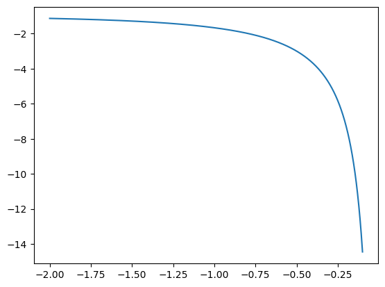

import numpy as np
import matplotlib.pyplot as plt08wk-2: [Python] – R복습 / numpy intro
1. 수능문제
2024수능-19. 함수 \(f(x) = \sin \frac{\pi}{4} x\) 할 때, \(0 < x < 16\)에서 부등식
\[ f(2+x) f(2-x) < \frac{1}{4} \]
을 만족시키는 모든 자연수 \(x\)의 값의 합을 구하시오. [3점]
(풀이) – R
f = function(x){
sin(pi/4 *x)
}x = 1:15
x [1] 1 2 3 4 5 6 7 8 9 10 11 12 13 14 15f(2+x) * f(2-x) < 1/4 [1] FALSE TRUE FALSE FALSE FALSE TRUE FALSE FALSE FALSE TRUE FALSE FALSE
[13] FALSE TRUE FALSEx[f(2+x) * f(2-x) < 1/4][1] 2 6 10 14sum(x[f(2+x) * f(2-x) < 1/4])[1] 32(풀이) – Python
import numpy as npf = lambda x: np.sin(np.pi/4 *x)
# def f(x):
# return np.sin(np.pi/4 *x)x = np.array(range(1,16))
# x= np.array(list(range(1,16)))
xarray([ 1, 2, 3, 4, 5, 6, 7, 8, 9, 10, 11, 12, 13, 14, 15])f(2+x) * f(2-x) < 1/4array([False, True, False, False, False, True, False, False, False,
True, False, False, False, True, False])x[f(2+x) * f(2-x) < 1/4]array([ 2, 6, 10, 14])sum(x[f(2+x) * f(2-x) < 1/4])np.int32(32)2025수능-6. \(\cos \left(\frac{\pi}{2} + \theta \right) = -\frac{1}{5}\) 일 때, \(\frac{\sin\theta}{1 - \cos^2\theta}\) 의 값은? [3점]
- \(-5\)
- \(-\sqrt{5}\)
- \(0\)
- \(\sqrt{5}\)
- \(5\)
(풀이) – R
theta = 2.94cos(pi/2+theta) # 이 값이 -0.2 정도가 되어야 할텐데?[1] -0.20023반복계산을 하다보니까 \(\theta \approx 2.94\) 인듯
sin(theta)/(1-cos(theta)^2)[1] 4.994257(풀이) – Python
import numpy as nptheta = 2.94np.cos(np.pi/2+theta) # 이 값이 -0.2 정도가 되어야 할텐데?np.float64(-0.20022998472177103)반복계산을 하다보니까 \(\theta \approx 2.94\) 인듯
np.sin(theta)/(1-np.cos(theta)**2)np.float64(4.99425698598313)2. 벡터인덱싱
import numpy as np# 예제1 – 양수의 원소를 뽑는다.
x = np.array([1,2,-2,4,5,-5,6])
xarray([ 1, 2, -2, 4, 5, -5, 6])x>0array([ True, True, False, True, True, False, True])x[x>0]array([1, 2, 4, 5, 6])#
# 예제2 – 3보다 큰 원소를 뽑는 방법
x = np.array([1,2,-2,4,5,-5,6])
xarray([ 1, 2, -2, 4, 5, -5, 6])x[x>3]array([4, 5, 6])#
# 예제3 – 3번째 원소를 뽑는방법
x = np.array([1,2,-2,4,5,-5,6])
xarray([ 1, 2, -2, 4, 5, -5, 6])arr = np.array([False, False, True, False, False, False, False])
arrarray([False, False, True, False, False, False, False])x[arr]array([-2])#
# 예제4 – 값이 -2인 원소를 뽑아라.
x = np.array((1,2,-2,4,5,-5,6))
xarray([ 1, 2, -2, 4, 5, -5, 6])x[x == -2]array([-2])#
# 예제5 – 값이 -1.5와 가장 가까운 원소를 뽑아라.
(풀이1)
x = np.array((1,2,-2,4,5,-5,6))
xarray([ 1, 2, -2, 4, 5, -5, 6])x - (-1.5)array([ 2.5, 3.5, -0.5, 5.5, 6.5, -3.5, 7.5])abs(x - (-1.5))array([2.5, 3.5, 0.5, 5.5, 6.5, 3.5, 7.5])abs(x - (-1.5)) == min(abs(x - (-1.5)))array([False, False, True, False, False, False, False])x[abs(x - (-1.5)) == min(abs(x - (-1.5)))]array([-2])(풀이2)
x = np.array((1,2,-2,4,5,-5,6))
xarray([ 1, 2, -2, 4, 5, -5, 6])np.argmin(abs(x - (-1.5)))np.int32(2)x[np.argmin(abs(x - (-1.5)))]np.int32(-2)#
# 예제6 – 값이 0.5와 가장 가까운 원소를 뽑아라.
x = np.random.normal(size=100)
xarray([-0.55549182, 1.135786 , 0.22488222, -0.27828521, 0.31068053,
-0.84615565, -1.06123884, -2.31023264, -1.0778794 , -0.66878153,
1.64599888, 0.00993931, 1.65980788, 0.96042669, -2.86658526,
2.034347 , 1.80625502, -0.16519044, 1.19241176, 0.38260825,
-0.27403661, 1.65076625, -0.40343291, -2.02631684, 0.01365176,
1.04271385, 0.92079969, -1.52455003, -1.07817949, -0.03206049,
0.32152143, -0.62012408, 0.49889869, -1.01910041, 0.88194355,
0.02572674, -0.39642517, 0.50727392, -0.12259257, 1.21927153,
-2.1291978 , -0.46889021, -0.67331983, -1.28200754, -0.47672535,
-0.50068836, -1.84971734, 1.1355189 , 0.38128017, -0.42444266,
1.45208803, -0.20620405, 0.07597739, -0.07526696, -0.63209592,
0.70175138, 0.20299937, -0.91183719, -0.60483135, 0.37805421,
-1.19670774, 0.47363231, 0.28659428, 1.00122163, -0.30186951,
0.75026228, 1.01250358, -0.34074013, 0.38256699, -0.67904123,
-0.58000617, -0.1756565 , -0.6490659 , -0.58708219, -0.09953991,
-0.04566179, 0.65090341, -0.19099064, -0.8320224 , 0.03526678,
1.38999487, -2.51090913, 0.4489458 , -0.42371785, -1.1491281 ,
-0.91249818, -0.1346099 , 0.50149025, -1.52023722, -0.1528213 ,
0.50149835, -0.27008287, -1.45674315, -0.62041124, 1.62022929,
-1.15825033, 0.35336406, -0.13698548, -1.04901816, -0.60020016])x[np.argmin(abs(x - 0.5))]np.float64(0.4988986892032787)#
3. 연산
# 예제 – 아래의 벡터를 고려하자.
x = np.random.normal(size=100)(1) x의 원소중 그 값이 양수인 것은 모두 몇개인가?
sum(x > 0)np.int32(53)(2) x의 평균을 구하여라.
np.mean(x)np.float64(0.03420819894888085)x.mean()np.float64(0.03420819894888085)(3) x의 원소중 평균과 가장 가까운 값을 구하여라.
np.argmin(abs(x - np.mean(x)))np.int32(85)x[85]np.float64(0.03368043239281483)# 예제 – 아래의 벡터를 고려하자.
x = np.random.randint(1,101,size=50)
xarray([70, 23, 57, 34, 32, 62, 77, 56, 98, 13, 97, 95, 67, 7, 40, 89, 35,
39, 32, 7, 7, 98, 11, 99, 56, 32, 50, 4, 23, 64, 68, 81, 26, 60,
73, 84, 36, 31, 9, 2, 14, 40, 34, 61, 66, 99, 62, 15, 16, 48])(1) x의 원소중 짝수는 몇개 있는가?
sum((x% 2) == 0)np.int32(27)50- sum(x%2)np.int32(27)(2) x의 원소중 가장 작은 홀수는 무엇인가?
(풀이1)
xarray([70, 23, 57, 34, 32, 62, 77, 56, 98, 13, 97, 95, 67, 7, 40, 89, 35,
39, 32, 7, 7, 98, 11, 99, 56, 32, 50, 4, 23, 64, 68, 81, 26, 60,
73, 84, 36, 31, 9, 2, 14, 40, 34, 61, 66, 99, 62, 15, 16, 48])min(x[x%2 == 1])np.int32(7)(풀이2)
x = np.sort(x)
xarray([ 2, 4, 7, 7, 7, 9, 11, 13, 14, 15, 16, 23, 23, 26, 31, 32, 32,
32, 34, 34, 35, 36, 39, 40, 40, 48, 50, 56, 56, 57, 60, 61, 62, 62,
64, 66, 67, 68, 70, 73, 77, 81, 84, 89, 95, 97, 98, 98, 99, 99])x[x%2 == 1]array([ 7, 7, 7, 9, 11, 13, 15, 23, 23, 31, 35, 39, 57, 61, 67, 73, 77,
81, 89, 95, 97, 99, 99])답은 7
2010(나)6월평가원-4. 실수 \(a\) 가
\[
\frac{2^a + 2^{-a}}{2^a - 2^{-a}} = -2
\] 를 만족시킬 때, \(4^a + 4^{-a}\) 의 값은?
- \(\frac{5}{2}\)
- \(\frac{10}{3}\)
- \(\frac{17}{4}\)
- \(\frac{26}{5}\)
- \(\frac{37}{6}\)
(풀이) – R
a = seq(from=-2, to =-0.1, 0.0001)
f<- function(a){
up = 2^(a) + 2^(-a)
down = 2^(a) - 2^(-a)
up/down
}
plot(a,f(a))
abline(h=-2,col=2)a[which.min(abs(f(a) -(-2)))][1] -0.7925f(-0.7925)[1] -1.9999614^(-0.7925) + 4^(0.7925)[1] 3.333403(풀이) – Python
import numpy as np
import matplotlib.pyplot as plt Matplotlib is building the font cache; this may take a moment.a = np.linspace(-2,-0.1,10001)def f(a):
up = 2**(a) + 2**(-a)
down = 2**(a) - 2**(-a)
return up/down plt.plot(a,f(a))
np.argmin(abs(f(a) - (-2)))np.int32(6355)a[6355]np.float64(-0.7925500000000001)4**(-0.79255) + 4**(0.79255)3.33358750110605942024수능-16. 방정식 \(3^{x-8} = \left(\frac{1}{27}\right)^x\) 을 만족시키는 실수 \(x\)의 값을 구하시오. [3점]
(풀이) – R
x = seq(from = -5, to=5, by =0.1)
l = 3^(x-8) - (1/27)^x
x[which.min(abs(l))][1] 2(풀이) – Python
x = np.linspace(-5,5,101)
l = 3**(x-8) - (1/27)**x
np.argmin(abs(l))np.int32(70)x[70]np.float64(2.0)4. 반복문
2021(가)9월평가원-10. 수열 \(\{a_n\}\)은 \(a_1 = 12\)이고, 모든 자연수 \(n\)에 대하여
\[
a_{n+1} + a_n = (-1)^{n+1} \times n
\] 을 만족시킨다. \(a_k > a_1\)인 자연수 \(k\)의 최소값은?
- \(2\)
- \(4\)
- \(6\)
- \(8\)
- \(10\)
(풀이) – R
a = c()
aNULLa = c()
a[1] = 12
for(n in 1:100){
a[n+1] = - a[n] + (-1)^(n+1) * n
}(1:100)[a > a[1]] [1] 8 10 12 14 16 18 20 22 24 26 28 30 32 34 36 38 40 42 44
[20] 46 48 50 52 54 56 58 60 62 64 66 68 70 72 74 76 78 80 82
[39] 84 86 88 90 92 94 96 98 100답은 8
a [1] 12 -11 9 -6 2 3 -9 16 -24 33 -43 54
[13] -66 79 -93 108 -124 141 -159 178 -198 219 -241 264
[25] -288 313 -339 366 -394 423 -453 484 -516 549 -583 618
[37] -654 691 -729 768 -808 849 -891 934 -978 1023 -1069 1116
[49] -1164 1213 -1263 1314 -1366 1419 -1473 1528 -1584 1641 -1699 1758
[61] -1818 1879 -1941 2004 -2068 2133 -2199 2266 -2334 2403 -2473 2544
[73] -2616 2689 -2763 2838 -2914 2991 -3069 3148 -3228 3309 -3391 3474
[85] -3558 3643 -3729 3816 -3904 3993 -4083 4174 -4266 4359 -4453 4548
[97] -4644 4741 -4839 4938 -5038(풀이) – Python
import numpy as npa = []
a = a + [12]for n in range(1,101):
a.append(-a[-1] + (-1)**(n+1) * n)np.array(range(1,102))[np.array(a) > a[0]]array([ 8, 10, 12, 14, 16, 18, 20, 22, 24, 26, 28, 30, 32,
34, 36, 38, 40, 42, 44, 46, 48, 50, 52, 54, 56, 58,
60, 62, 64, 66, 68, 70, 72, 74, 76, 78, 80, 82, 84,
86, 88, 90, 92, 94, 96, 98, 100])2007(나)6월평가원-14. 다음은 어느 회사의 연봉에 대한 규정이다.
(가) 입사 첫째 해 연봉은 \(a\)원이고, 입사 19년째 해까지의 연봉은 해마다 직전 연봉에서 8%씩 인상된다.
(나) 입사 20년째 해부터의 연봉은 입사 19년째 해 연봉의 \(2/3\)로 한다.
이 회사에 입사한 사람이 28년 동안 근무하여 받는 연봉의 총합은? (단, \(1.08^{18} = 4\)로 계산한다.)
- \(\frac{101}{2} a\)
- \(\frac{111}{2} a\)
- \(\frac{121}{2} a\)
- \(\frac{131}{2} a\)
- \(\frac{141}{2} a\)
(풀이) – R
a = 1
sal = c()
sal[1] = a
for(y in 2:19){
sal[y] <- sal[y-1] * 1.08
}
for(y in 20:28){
sal[y] <- sal[19] * 2/3
}
sum(sal)[1] 65.42238(풀이) – Python
sal = [1]
for y in range(18):
sal.append(sal[-1]*1.08)
s19 = sal[-1]
for y in range(9):
sal.append(s19*2/3)sum(sal)65.42238023410619